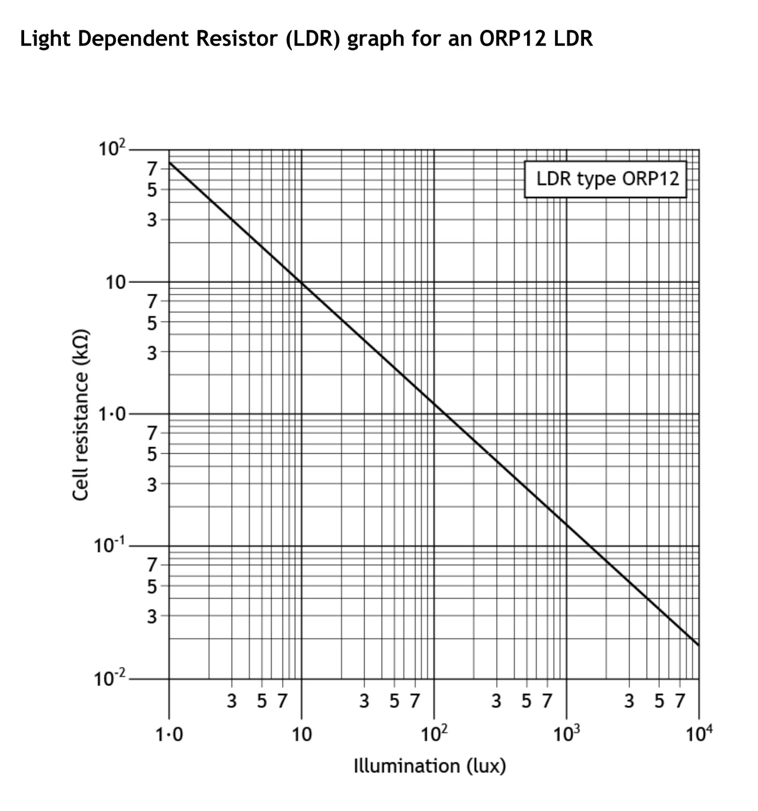
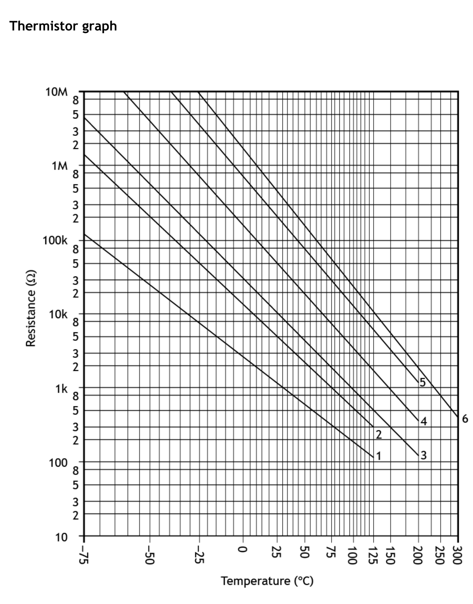

ORP12 LDR. Both axes are logarithmic. Go up from the illumination (lux) to the line, then across to read the resistance in kΩ.

Thermistor — use curve 3. Go up from the temperature to curve 3 (labelled at its right-hand end), then across to read the resistance. The y-axis uses k (× 1000) and M (× 1 000 000).
